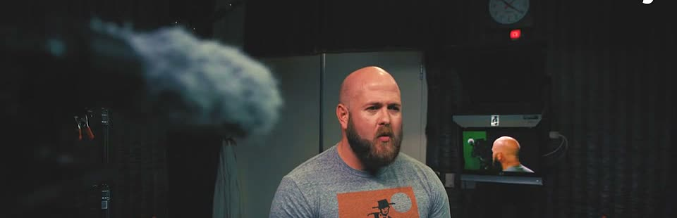

Eight years producing live news in network control rooms. Eight years at Google, where I led communications for the horizontal org that drives technical change across the company, wrote for a VP and Google's then-CIO, and built AI infrastructure so the comms function scales instead of drowning. This page is the communications-first view of that career. The full builder site is one click away, because the systems work is part of the comms story, not a departure from it.
Earlier: rebuilt Google's Day-One technical orientation into self-service onboarding for 75,000+ new hires at 88% CSAT. Also designed the peer-led speaker series and annual survey that shape the senior-engineer community's roadmap.

Comms leadership gets tested when Legal is on the call. Twice, that test ran live on air. At HuffPost Live I covered Scientology while the network was under active legal scrutiny. Counsel drew hard lines. I built the editorial filter that got every segment through review without losing the story. Then Fusion. I produced Jorge Ramos's flagship weekly under a $500 million lawsuit. Half a billion dollars on the line. The coverage ran. We stayed the reporter, never the headline.
Same discipline carried into Google. Executive comms under regulatory and litigation scrutiny. The first draft has to anticipate the review, not fight it.
While leading communications, I built the systems a modern comms function needs. Not a career change. The same job, given leverage.
The right voice here is the VP I wrote for. I'm requesting that quote directly, not reconstructing it from reviews. This space stays empty until it lands. References who can vouch for the ghostwriting and the review-cycle claim are available on request.
Hiring for executive comms, internal comms, or a comms leader who can build? Email me: mitwilli@gmail.com. The resume PDF is one click, no form. Seattle-based, open to relocation, US citizen. I move fast, whatever process you run.